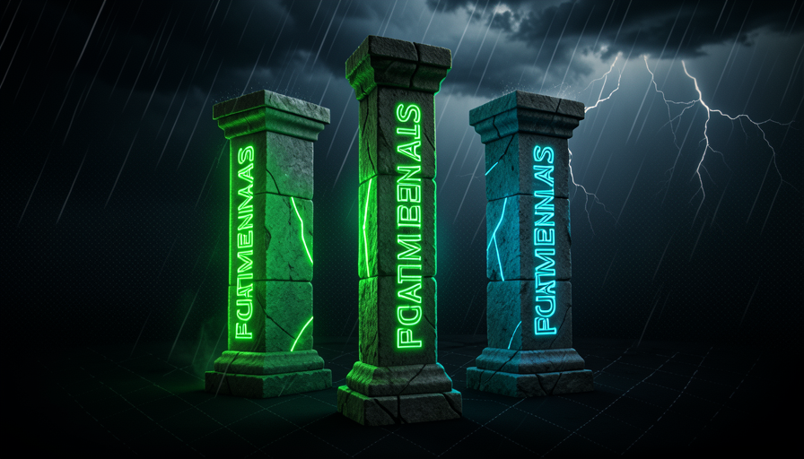
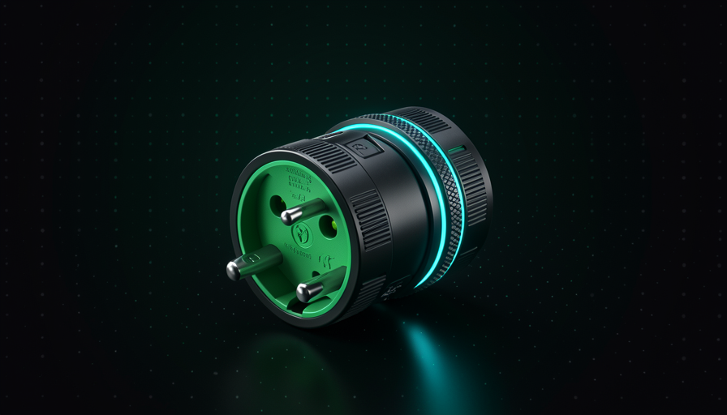

📖 Glossário vivo (leia antes — volte sempre que precisar)
Os termos que voltam a aparecer (modelo, prompt, agente, skill, harness, codebase) já foram definidos no módulo 1.1. Aqui estão os novos deste módulo:
🧭 Manter-se agnóstico
🧠 Imagine assim: você compra uma furadeira que só aceita brocas de uma marca. Enquanto essa marca existir e for boa, ótimo. No dia em que sair uma broca melhor (ou a sua sumir do mercado), sua furadeira inteira vira lixo. Agora imagine uma furadeira com encaixe universal: troca a broca, mantém a furadeira. Setup agnóstico é a furadeira universal.
No módulo 1.2 a gente concluiu: não vale a pena esperar parado a IA melhorar. Mas no módulo 1.1 a gente viu que o modelo muda o tempo todo. Como agir agora sem ficar refém de um modelo que vai virar peça velha em três meses? A resposta do Matt Pocock é manter o seu setup agent-agnostic (agnóstico ao agente).
Agnóstico significa: o seu harness — seus prompts, suas skills, a forma como o seu codebase está organizado — não depende de qual IA está dentro. Nas palavras dele: "mantenha o harness agent-agnostic e aplique bons fundamentos → continua funcionando no próximo modelo." A consequência é poderosa: quando sair o modelo melhor, você só troca o motor. O carro (que você passou tempo afinando) continua valendo. É o oposto de reconstruir tudo a cada lançamento — e por isso Pocock diz que ele não é um "pundit" (palpiteiro), só está "fazendo o melhor com o que tenho agora."
Encaixe universal: qualquer modelo pluga no mesmo harness. Trocar o motor não desmonta o carro.

⚠️ Erro comum de iniciante
Confundir "agnóstico" com "não usar o melhor modelo". É o contrário: você usa o melhor de hoje — só não constrói nada que só funcione com ele. Usar o melhor motor e ter um encaixe universal não são opostos; são as duas metades do mesmo plano.
Em 1 frase: agnóstico = encaixe universal — troca o modelo sem reconstruir o harness.
⛓️ O custo de otimizar pra um só
🧠 Imagine assim: uma roupa feita sob medida pro corpo de uma só pessoa. Fica perfeita nela. Mas ninguém mais consegue vestir — e se essa pessoa engordar 2 quilos, a roupa já não serve. Otimizar demais pra um modelo é costurar a roupa tão justa que qualquer mudança rasga.
Otimizar é bom — mas tem um veneno escondido na palavra overotimizar. O próprio Pocock confessa o risco, com uma frase que vale gravar: "If I over-optimize around a model... I lose focus on the fundamentals" (se eu otimizo demais em torno de um modelo, perco o foco nos fundamentos). Quando você molda cada prompt, cada skill e cada truque pro jeitão específico de um modelo, você cria um lock-in: trocar passa a doer tanto que você simplesmente não troca, mesmo quando deveria.
O custo aparece de três formas. (1) Retrabalho: sai modelo novo, e seus prompts "mágicos" que dependiam de uma manha do anterior param de funcionar — você refaz tudo. (2) Cegueira: você fica tão envolvido em truques de um modelo que não percebe quando outro, mais barato, já faria o mesmo. (3) Fragilidade: seu setup vira um castelo de cartas afinado num único motor. Pocock equilibra (o famoso 50/50 do módulo 1.1): o esforço inteligente vai pro harness, mas o harness não pode ser casado com o motor. Otimize o carro, não a dependência do motor.
Recuperação rápida: qual é o perigo de overotimizar pra um único modelo?
Em 1 frase: over-otimizar pra um motor é roupa sob medida: perfeita hoje, lixo no próximo lançamento.
🏛️ Fundamentos que não expiram
🧠 Imagine assim: a moda muda toda estação, mas saber costurar nunca sai de moda. Quem só compra a roupa do momento fica refém da loja. Quem sabe costurar veste qualquer estação. Fundamentos de software são "saber costurar".
Essa é a frase mais importante do método inteiro, e Pocock a repete: "People are focused on the wrong thing — the big shiny new thing — when in fact just focus on the stuff that's been working for 30-40 years." Traduzindo: o povo olha pro brinquedo novo e brilhante, quando o que vale é focar no que funciona há 30-40 anos. Esses são os fundamentos — e eles são, por definição, agnósticos: não há modelo de IA que os invalide.
Quais são? Versionar com git (o "botão de desfazer" do seu projeto), escrever testes (provas automáticas de que o código funciona), organizar bem os arquivos, documentar o suficiente, escopar tarefas com clareza. Repare: nada disso tem a ver com "qual IA". São princípios de engenharia que valiam antes da IA e valem depois. E aqui mora o pulo do gato: quando seu codebase respeita esses fundamentos, qualquer modelo trabalha melhor nele — inclusive os mais baratos (você vai ver isso direitinho no módulo 1.5). Fundamentos não são "o jeito antigo"; são a base que faz o jeito novo funcionar.
Os modelos passam por cima; a base de fundamentos fica. Construa nela.
Indo mais fundo (opcional): por que "30-40 anos" e não "para sempre"?
Pocock usa "30-40 anos" porque é a idade aproximada das práticas que viraram consenso na engenharia de software: controle de versão moderno, testes automatizados, design modular. Não é que sejam eternos — é que sobreviveram a dezenas de "próximas grandes coisas" (a web, mobile, cloud) sem perder o valor. Uma prática que aguentou tudo isso provavelmente aguenta a próxima onda de IA também. É uma aposta de probabilidade, não de fé.
Em 1 frase: a moda (modelo) muda toda estação; saber costurar (fundamentos) nunca sai de moda.
🌀 O vibe coder que troca toda semana
🧠 Imagine assim: alguém que troca de academia toda semana atrás da "melhor esteira do mercado", mas nunca completa um treino. Equipamento novo toda hora, músculo nenhum nunca. A esteira não é o problema — a falta de constância é.
Pocock dá um exemplo concreto do anti-padrão: o vibe coder que "troca de ferramenta toda semana (replit → lovable → …) e nunca aprende princípio nenhum." Toda semana sai um app ou modelo novo, e a pessoa migra: novo dashboard, novos atalhos, nova promessa. O problema não é a curiosidade — é que cada troca zera o aprendizado. Quem nunca fica tempo suficiente numa ferramenta nunca desce abaixo da superfície dela.
Aqui vem a sutileza que Pocock faz questão de marcar: "a diferença é de ABORDAGEM, não de crença em IA." Ele não está dizendo "não use IA" nem "IA é hype". Tanto ele quanto o vibe coder acreditam em IA — a diferença é o jeito. O vibe coder otimiza pela novidade (a ferramenta do momento); o método Pocock otimiza pelo fundamento (a habilidade que fica). É exatamente a armadilha do módulo 1.2 vista de outro ângulo: em vez de esperar parado o modelo melhorar, o vibe coder corre atrás de cada modelo novo — e os dois extremos têm o mesmo resultado: nunca construir nada que dure.

✗ Vibe coder (otimiza pela novidade)
- • Migra de ferramenta a cada hype.
- • Reaprende a interface, esquece o resto.
- • Nunca passa da superfície de nada.
- • Setup vira colcha de retalhos.
✓ Método Pocock (otimiza pelo fundamento)
- • Usa o melhor modelo de hoje, sem se casar.
- • Investe em git, testes, organização.
- • Aprofunda — a habilidade acumula.
- • Setup agnóstico que sobrevive à troca.
Em 1 frase: o vibe coder troca de ferramenta toda semana e nunca aprende nada — a diferença é de abordagem, não de fé na IA.
🛡️ Blindar seu setup
🧠 Imagine assim: uma cozinha profissional. As receitas (skills) ficam em fichas; os ingredientes (codebase) ficam organizados; os fogões (modelos) podem ser trocados sem refazer o cardápio. Você melhora a cozinha um pouco todo dia, mas usa o melhor fogão disponível.
"Blindar" não é parar de evoluir — é o contrário. Pocock e David Ondrej concordam num ponto prático: melhore o setup ativamente, todo dia (Ondrej cita coisas como VPS, Tailscale, etc.) E use o melhor modelo. As duas coisas juntas. O segredo é onde você investe esse esforço: nas peças que ficam (skills bem escritas, codebase organizado, fundamentos) — não em truques colados a um motor que vai embora. Você puxa todas as alavancas do módulo 1.1, mas mira nas que são agnósticas.
Existe até um pré-aviso de prudência no método: Pocock espera cerca de um mês antes de adotar um modelo novo no fluxo de produção (foi o que ele fez com o Opus 4.5). Não é medo de novidade — é dar tempo de saber se o motor novo realmente cabe no encaixe sem surpresas. Setup blindado = você adota o melhor, mas no seu ritmo, sem que cada lançamento vire uma emergência.
🔬 Exemplo resolvido: o lançamento de um modelo novo
Cenário: sai o "Modelo X 2.0", todo mundo eufórico. Dois desenvolvedores reagem:
Setup frágil (casado)
Larga tudo, migra na hora. Os prompts antigos dependiam de manhas do modelo velho → quebram. Passa 3 dias reescrevendo skills. Descobre depois que metade do ganho era hype.
Setup blindado (agnóstico)
Troca só a linha do modelo no config. Roda os testes existentes pra comparar. Espera ~1 mês de uso real. Skills e codebase não mudam — o encaixe é universal. Migração: 5 minutos.
Em 1 frase: blindar = melhorar o setup todo dia e usar o melhor modelo, mas só nas peças que ficam.
✅ Checklist de agnosticismo
🧠 Imagine assim: antes de qualquer decoração na casa, o pedreiro verifica a fundação. Este checklist é a sua "vistoria de fundação" — rode antes de gastar tempo otimizando truques de modelo.
Fechando: toda vez que você for adotar uma nova ferramenta, prompt ou truque, faça uma pergunta de filtro — "isto continua valendo se eu trocar o modelo amanhã?". Se a resposta for não, você está construindo dependência, não patrimônio. O checklist abaixo é o resumo prático do módulo. Copie, cole no topo do seu projeto, e rode antes de cada decisão de setup:
VISTORIA DE AGNOSTICISMO — rode antes de cada decisão de setup
Pergunta de filtro: "isto continua valendo se eu trocar o modelo amanhã?"
[ ] MODELO trocável? Mudar de IA é editar 1 linha de config — ou refazer tudo?
[ ] SKILLS portáteis? Funcionam em Claude Code, Codex etc. — ou só num app?
[ ] FUNDAMENTOS no lugar? git + testes + organização + docs + escopo claro.
[ ] PROMPTS sem manha? Pedidos claros em inglês/português simples,
não truques que dependem de um modelo específico.
[ ] CODEBASE organizado? Qualquer modelo (até o barato) navega fácil.
[ ] RITMO próprio? Adota modelo novo quando comprovado (~1 mês), não no hype.
3+ "não" = seu setup está casado com um motor. Blinde antes de otimizar.
Recuperação rápida: qual é a "pergunta de filtro" do checklist agnóstico?
Em 1 frase: antes de adotar qualquer coisa, pergunte "sobrevive à troca de modelo?" — só o que passar entra no setup.
🧾 Resumo do Módulo
Próximo módulo:
1.4 — DX × AX: projetar o codebase para o agente trabalhar bem (Agent Experience).